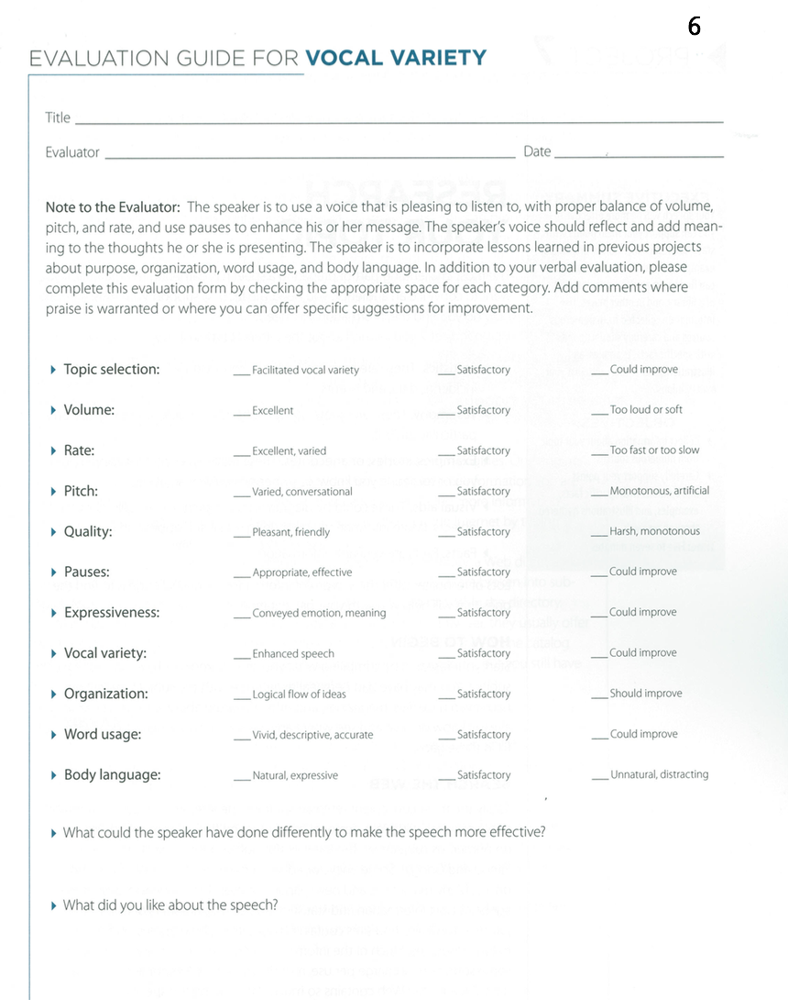

<!-- Main -->
	<div id="main" class="wrapper style1">
		<div class="container">
			<section>
				<div class="10u -1u">
					<header class="major">
					</header>
					<h2>What is this speech about ?</h2>
					<ul>
						<li>Your voice has a major effect on your audience. </li>
						<li>A lively, exciting voice attracts and keeps listeners’ attention. </li>
						 <li>A speaking voice should be pleasant, natural, forceful, expressive and easily heard. Use volume, pitch, rate and quality as well as appropriate pauses to reflect and add meaning and interest to your message. </li>
						<li>Your voice should reflect the thoughts you are presenting. </li>
</ul><br>
<h2>Objectives</h2>
<ul>
<li>Use voice volume, pitch, rate and quality to reflect and add meaning and interest to your message.</li>
	 <li>Use pauses to enhance your message.</li>
	 <li>Use vocal variety smoothly and naturally.</li>
	 <li>Time: Five to seven minutes.</li>
</ul><br>
<h2>Evaluation</h2>
Download: <a href="Evaluation6.pdf"></a>
	<br>

	<h2>Example Videos</h2>
	<p align="center">
		<iframe height="315"
		src="https://www.youtube.com/embed/6JfGHU3XiF0">
		</iframe>
		<iframe height="315"
		src="https://www.youtube.com/embed/X27DtKtZiCI">
		</iframe>
		<iframe height="315"
		src="https://www.youtube.com/embed/jGTkfb_l-O4">
		</iframe>
	</p>


	<h2>More Information</h2>
<li><a href="Vocal_variety.pdf">Resource from Toastmasters Website</a></li>
		<li><a href="http://sixminutes.dlugan.com/speak-up-voice-projection/">Voice Projection</a></li>
		<li>  <a href="http://sixminutes.dlugan.com/voice-strength-training/">Voice Training</a></li>
<li>  External Resources: Click <a href="http://sixminutes.dlugan.com/toastmasters-speech-6-vocal-variety/">here</a></li>

				</div>
			</section>
		</div>
	</div>
